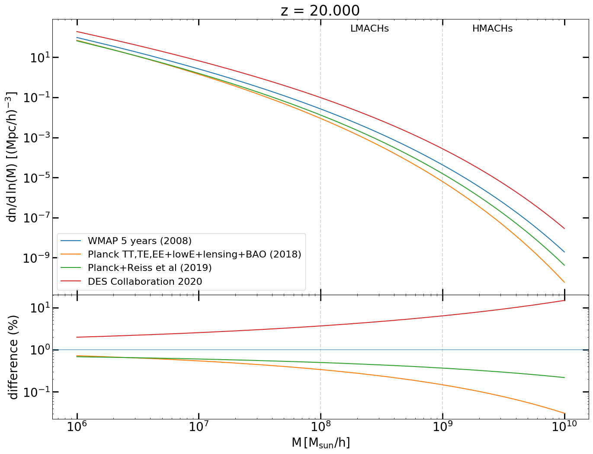

The Effect of Cosmological Parameters on Reionization Observables
How variations in ΛCDM parameters affect the Epoch of Reionization?
Cosmological parameters in numerical simulation for the Epoch of Reionization are essentially taken for absolute. An ongoing question is how variations of ΛCDM parameters will affect the reionization history in simulations.

More recent result on local measurement of local cosmology Riess et al. (2019) are in disagreement with value inferred from CMB experiment Planck ollaboration (2018), raising the tension beyond a plausible level of odds. The inferred initial condition increases of a few order of magnitude the Halos distribution for masses above 109 M☉ at high redshift Watson (2013).
These halos host star-forming galaxies that are unaffected by the radiative feedback, and therefore are the main driver of the cosmic reaionization. Any alteration of their number density is expected to modify ionizing photon budget required by the hosted sources to complete reionization.
The aim of this project is to have an additional probe to help solve the current Hubble tension. To do so, I am planning to run a series of N-body simulations, performed with the CUBEP3M code Harnois-Deraps et al. (2013), and post-process with Grizzly, one dimensional RT code, in order to reproduce large scale observable, detectable by upcoming EoR experiment.
{kind=link}
More recent result on local measurement of local cosmology Riess et al. (2019) are in disagreement with value inferred from CMB experiment Planck ollaboration (2018), raising the tension beyond a plausible level of odds. The inferred initial condition increases of a few order of magnitude the Halos distribution for masses above 109 M☉ at high redshift Watson (2013).
These halos host star-forming galaxies that are unaffected by the radiative feedback, and therefore are the main driver of the cosmic reaionization. Any alteration of their number density is expected to modify ionizing photon budget required by the hosted sources to complete reionization.
The aim of this project is to have an additional probe to help solve the current Hubble tension. To do so, I am planning to run a series of N-body simulations, performed with the CUBEP3M code Harnois-Deraps et al. (2013), and post-process with Grizzly, one dimensional RT code, in order to reproduce large scale observable, detectable by upcoming EoR experiment.